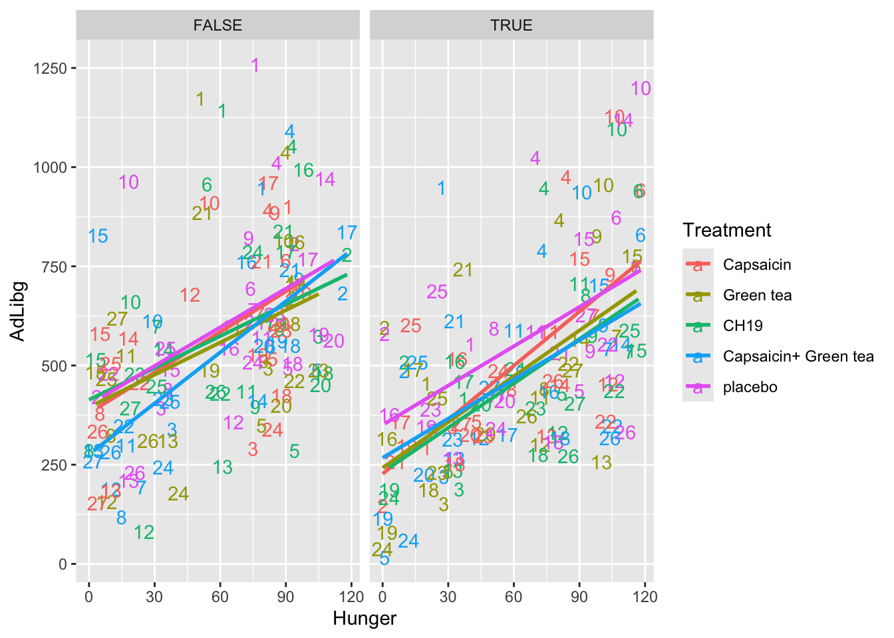
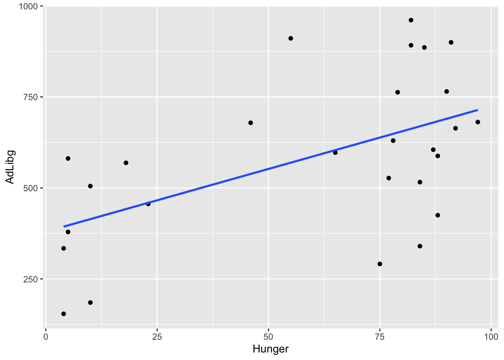
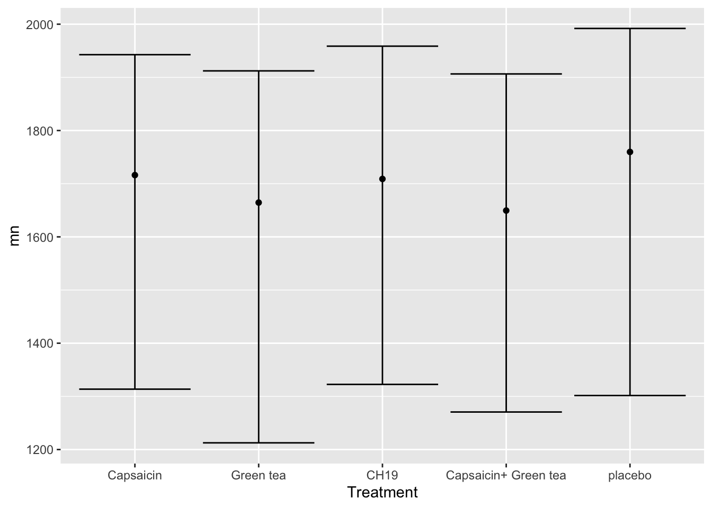

Chapter 6 Plotting data
Visualizing data is of utmost importance. Especially, looking at the raw data will enable you to point towards outliers and tendencies which may be lost when representing the data with descriptive statistics.
ggplot2 is a wide spread library for plotting data and used by a lot of users. Check it out on videos:
There is a very condensed cheat-sheet for ggplot2 on RStudios webpage
Loading the needed datasets chili and pasta:
library(data4consumerscience)
data(chili)
data(pasta)
# we subset to only have the "Pasta with legumes" data.
pasta <- pasta[pasta$StationName=='Pasta with legumes',]6.1 Histograms and boxplots
To show the total consumption a histogram is useful
library(ggplot2)
ggplot(data = chili, aes(x = AdLibg)) + geom_histogram()
The plot reveals a bi-modal distribution with an upper tail.
These observations comes from 5 different treatments, 27 different judges and at 10 test days. We can infer this using a boxplot with jittered raw data on top.
Per treatment:
ggplot(data = chili, aes(x = Treatment, y = AdLibg)) +
geom_boxplot() + geom_jitter()
Per Judge:
ggplot(data = chili, aes(x = factor(Judge), y = AdLibg)) +
geom_boxplot() + geom_jitter()
None of these explains the bi-modality seen in the histogram. However, we can combine test-day information, which essentially is reflecting whether it is first or second trial splitting at day 5: (TestDay>5)
ggplot(data = chili, aes(x = factor(Judge), y = AdLibg, color = factor(TestDay>5))) +
geom_boxplot(aes(group = factor(Judge))) + geom_jitter()
This coloring shows a clear difference between trials, which explains the bi-modal distribution. It also explains why the two modes of the distribution are overlapping, and why the distribution is skewed. Because while most judges have consumed more during the first trial, some judges did the opposite - higher consumption during the second trial.
6.2 Scatter plots
Lets plot the consumption (AdLibg) as a function of LikingAppearance, and add a tendency line:
ggplot(data = chili, aes(x = LikingAppearance, y = AdLibg)) +
geom_point() + stat_smooth(formula = 'y ~ x')
This plot shows AdLibg on the y-axis plotted against LikingApperance on the x-axis, with “stat_smooth()” adding a tendency line. Try adding “method = lm” inside the brackets of stat_smooth(), and see how the line changes.
Now, lets funk this up by splitting into test-days and get colors according to product:
ggplot(data = chili, aes(x = Hunger, y = AdLibg, color = Treatment)) +
geom_point() + stat_smooth(formula = 'y ~ x', se = F, method = lm) +
facet_wrap(~ TestDay>5)
The plot shows, that the tendency of food intake increasing with increased hunger, is true for all treatments, as well as duriung both trial days.
6.3 How to export plots
The plots shown in the Plots pane (lower right of RStudio) can be saved using the Export bottom.
You can also save the plots to a file using the ggsave() function.
If you run ggsave() without specifying which plot to export, it will use the latest. You can also directly specify the plot to export:
myplot <- ggplot(data = chili, aes(Hunger,AdLibg, color = Treatment)) +
geom_point() + stat_smooth(se = F, method = lm) + facet_wrap(~ TestDay>5)
ggsave('./data/YourFolderForNicePlots/hunger_vs_consumption.pdf',myplot)ggsave() supports different formats (.png, .tiff, .pdf,…) and further allows for editing the size (height = , width = ). Just change the .pdf in to the format your need.